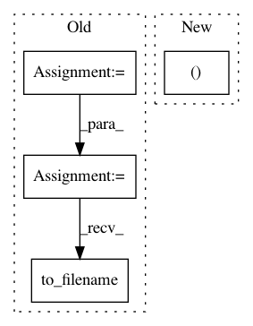

06a3d0890b11544375040024326f69f252e30601,dipy/workflows/segment.py,MedianOtsuFlow,run,#MedianOtsuFlow#Any#Any#Any#Any#Any#Any#Any#Any#Any#Any#,18
Before Change
logging.info("Applying median_otsu segmentation on {0}".
format(fpath))
img = nib.load(fpath)
volume = img.get_data()
masked_volume, mask_volume = median_otsu(volume, median_radius,
numpass, autocrop, vol_idx,
dilate)
mask_img = nib.Nifti1Image(mask_volume.astype(np.float32),
img.get_affine())
mask_img.to_filename(mask_out_path)
logging.info("Mask saved as {0}".format(mask_out_path))
if save_masked:
masked_img = nib.Nifti1Image(masked_volume, img.get_affine(),
After Change
logging.info("Applying median_otsu segmentation on {0}".
format(fpath))
data, affine, img = load_nifti(fpath, return_img=True)
masked_volume, mask_volume = median_otsu(data, median_radius,
numpass, autocrop, vol_idx,
In pattern: SUPERPATTERN
Frequency: 3
Non-data size: 4
Instances
Project Name: nipy/dipy
Commit Name: 06a3d0890b11544375040024326f69f252e30601
Time: 2016-08-29
Author: matthieu.dumont@usherbrooke.ca
File Name: dipy/workflows/segment.py
Class Name: MedianOtsuFlow
Method Name: run
Project Name: nipy/dipy
Commit Name: c117a3f9b888196936a2e3ef2b78a619b169d60e
Time: 2018-12-10
Author: skab12@gmail.com
File Name: dipy/workflows/denoise.py
Class Name: NLMeansFlow
Method Name: run
Project Name: nilearn/nilearn
Commit Name: a04fdeac1f3d7ad8f0e49393bb48e090c124ef99
Time: 2017-11-17
Author: jerome@dockes.org
File Name: nilearn/datasets/tests/test_atlas.py
Class Name:
Method Name: test_fetch_atlas_talairach